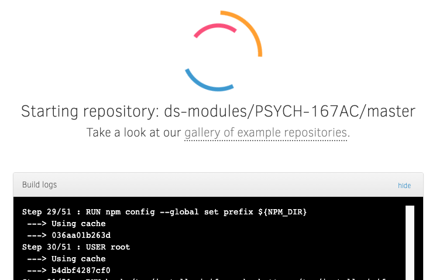

Data Science Modules
Contents
Data Science Modules#
Overview#
Data Science Modules (“DS Modules”) are short explorations into data science that give students the opportunity to work hands-on with a data set relevant to their course and receive some instruction on the principles of data analysis, statistics, and computing. DS Modules are designed and taught in an existing course from any discipline or field with the help and collaboration of the Data Science Modules Development Team and the course instructor. These DS Modules are often presented as interactive lectures or labs that allow students to learn from data sets that pertain to their course material.
The target audience for DS Modules are students with little to no previous data science knowledge or experience. Providing DS Modules within existing courses and in a range of disciplines, allows students who may never sign up for a data science course on their own the opportunity to gain skills in the field of data science.
The DS Modules Development Team collaborates with instructors across different departments and with a range of technical skills in order to connect with a wide variety of students. Cross-departmental connection helps to build the DS Modules program presence on campus and attract other faculty. Instructors work closely with the Development Team so that they can either teach the DS Modules themselves or assist while the DS Modules Development Team leads the class.
DS Modules are an excellent way for students to have a smooth and supported introduction to computing, statistics, and vital tools used in data science, which are becoming increasingly relevant across academic disciplines. They empower students to do research and pose their own questions using data, as well as enable instructors to apply new lenses to their area of expertise. By the end of a DS Module, students will learn to process data in real-time, write and execute code, make visualizations, develop analytical skills, and learn to apply these skills to their relevant field or course work.
Key Pedagogical or Curricular Strategies
DS Modules vary widely and are customized based on each instructor’s objectives and course content. A DS Module might simply be one or two lectures on how to interpret data and statistics in news media reports or a multiple-session research workshop for students working on a data-centered project. Students in DS Modules learn to use the [Python]{.underline} programming language and complete assignments in [Jupyter Notebooks]{.underline}, both gold-standard data science tools used in the [Data Science Undergraduate Studies]{.underline}. Instructors use these tools to share data with students, assign homework and write instructions in the cloud-based notebook, and then ask for students’ interpretation of the results, all within the same environment.
As mentioned, DS Modules bring data-driven instruction into courses by providing Jupyter Notebooks, an open-source web application that allows you to create and share documents that contain live code, equations, visualizations, and narrative text. Jupyter Notebooks are used for data cleaning and transformation, numerical simulation, statistical modeling, data visualization, machine learning, and much more.
Undergraduate data science students on the Jupyter Notebook Development Team work with instructors to create the content in a set of 1 to 3 notebooks to deploy into an existing class. The instructor may already be teaching about a topic extensively so that students are primed for the content. For example, if implicit bias is covered heavily in a few sections of a psychology course, implementing a DS Module allows students to collect and explore data, and analyze trends in the research field. This hands-on data analysis often includes computational or critical thinking assignments.
Implementation Steps
If an instructor would like to incorporate a DS Module into their course, the first step in the process is to hold a one-on-one meeting with a DS Modules Development Team member to outline the deliverables, curricular strategies, and develop a plan for collaboration between the DS Modules Development Team and the instructor, which should include a timeline for mid-term and long-term deliverables. In a subsequent planning meeting, the specific data set is discussed and the instructor’s desired outcomes are further clarified.
Depending on the faculty member and the graduate students supporting the course, the DS Modules Development Team may offer more or less support. Sometimes the faculty is familiar with Python and prefers deploying the Jupyter Notebook themselves. Alternatively, the DS Modules Development Team can teach the DS Modules to the class.
Another implementation method can include a Graduate Student Instructor (GSI). The GSI can learn how to use the Jupyter Notebook and implement it within their lab section. The Jupyter Notebooks are created with an entry-level coding approach and support documentation so that they can be straightforward for the GSIs to support within the context of the DS Module lesson. In this case, the DS Module Development Team will train the GSI and attend the first lab to support during its deployment. Then, the second time the GSI offers the class they can either instruct independently or have continued support from the DS Modules Development Team.
After implementing a DS Module, it is important for them to collect feedback from the instructor and the students. The Data Science Undergraduate Studies likes to have constructive discussions with instructors about what worked well, what didn’t work, and to receive ideas for improvement. They collect student feedback by sending out evaluations that ask questions about both the content and pacing.
Faculty have had a difficult time following-up over time for further discussions and continued iterative development, implementation, and ongoing use of the Jupyter Notebook. The Jupyter Notebooks need to be regularly updated both for content and for technical updates. Therefore, if the Notebooks are not regularly updated, then there is a loss of efficiency. It is important to have a regular schedule to refresh the materials and to ensure they continue to be a helpful resource.
*Training & Outreach *
The DS Modules Program Coordinator executes a flow of data science instruction and recruitment for the DS Modules program. It can begin with the summer workshop where the DS Modules program teaches faculty from various departments data science methods and gets them ready to adapt data science teaching tools to their own subject area. This training serves as a way to connect with faculty by working together to create new DS Modules for their courses and teaching them key preparation and implementation methods.
The Data Science Undergraduate Studies at Berkeley has created a [Curriculum Guide]{.underline} to help instructors with set-up, workflow, and pedagogy in teaching data sciences courses connected to Data 8. Much of the content in the [Curriculum Guide]{.underline} is useful for instructors teaching with Jupyter Notebooks and JupyterHub deployments.
Program representatives speak at the [Academic Innovations Studio]{.underline}, a campus space that supports pedagogy through the collaboration of faculty, researchers, graduate students, and staff. The organization is part of [Research, Teaching, and Learning]{.underline}, a larger organization that also houses the [ Research IT]{.underline} group.
The Data Science Undergraduate Studies is continuously looking for faculty interested in developing a DS Module for their course. They often give presentations to departments, groups of faculty, or hold one-on-one meetings with instructors to give them an idea of how implementing a DS Module would be beneficial for their students.
In terms of recruiting students for the DS Module teams, sometimes it is not difficult finding students who want to be involved in the DS Module development teams, and in others, additional outreach is needed.
Key Diversity and Inclusion Practices and Strategies
The focus of conducting DS Modules is to (a) give students exposure to data science through cross-disciplinary instruction and (b) offer data science tools to students who may otherwise never have the opportunity. DS Modules have been taught to everyone from first-year students with no coding or statistics experience to seniors taking upper-division econometrics. The [Data Science Undergraduate Studies]{.underline} has developed Data Science Modules for courses in:
Sociology
Legal Studies
Economics
Psychology
Information Studies
Medieval Studies
Rhetoric
Gender and Women’s Studies
Linguistics
Education
Economics
Education
Gender and Women’s Studies
Information Studies
Legal Studies
Linguistics
Medieval Studies
Psychology
Rhetoric
Sociology
The [Data Science Undergraduate Studies]{.underline} partner with D-Lab, and often collaborate with [Cal NERDS]{.underline}, an organization that is “comprised of a suite of programs and initiatives that provide faculty-mentored research opportunities, specialized tech training, graduate school preparation, career coaching, community building, and professional development to high achieving STEM undergraduates and graduate students.” [Cal NERDS]{.underline} gain expertise, build community, and contribute to the STEM workforce.
The DS Modules team works with [the Summer Bridge Program]{.underline} to increase the diversity of UC Berkeley students working on DS Module development. The Summer Bridge program is a six-week, academic residential program, serving 300+ entering undergraduates every summer. Scholars take a full course load, including two educational courses and a mentorship program that acclimates students to the research university.
The [Data Science Undergraduate Studies]{.underline} is working to get High School students involved through a summer program. This program is currently being developed by ______.
Given that all UC Berkeley undergraduates have an American Cultures graduation requirement, there has been a big push to develop DS Modules within [American Cultures]{.underline} classes. This provides another great opportunity to expand data science approaches into topic areas that have not traditionally employed them. This collaboration has produced a portfolio of social justice DS Modules (within the American Cultures courses). In some cases, the DS Modules team reached out to AC instructors, whereas in other cases motivated instructors reached out independently to the team with a request to develop a DS Module. To begin the process, an instructor can make a straightforward request using the form on the Data Science Undergraduate Studies website.
For example, a DS Module was developed for Ethnic Studies 21, a class on mass incarceration, by a student who had taken the course in a previous semester. This DS Module explored prison overcrowding and realignment data. In a full cycle of its development and implementation, this studentled the DS Module in the class for its initial deployment.
Links to Key Cyber Resources
Data Science DS Modules
Data Science Modules informational
[GitHub]{.underline}: Jupyter
notebooks are developed and stored. The public materials are for students. The private materials are for the faculty and GSIs.
Answer Keys and information for instructors is kept behind a
password online on GitHub
[[Deployment
[[Data Peer
Consultants](https://docs.google.com/document/d/1F66WKf7dYEglM9tUexe5MWYtqkO8qZz1G_zGYr7dlOk/edit)]{.underline}
Located in the Moffit Library
They can assist GSIs if they are not comfortable with the DS
Module’s content.
DS Module students can work with a Data Peer Consultant during
The DS Modules Program will alert the peer consultants at
Moffitt before the DS Module’s deployment so that they can prepare to serve as alternative office hours.
Publicity
Building Data Science Education Together
-
explaining DS Modules
Examples
Course listing on UCB DSEP
[GitHub]{.underline} {width=”6.5in”
height=”1.6111111111111112in”}
{width=”6.5in”
height=”1.6111111111111112in”}
Course GitHub [website]{.underline}
 {width=”6.5in”
height=”1.2916666666666667in”}
{width=”6.5in”
height=”1.2916666666666667in”}
Course DataHub
[website]{.underline} {width=”5.003968722659668in”
height=”3.5364588801399823in”}
{width=”5.003968722659668in”
height=”3.5364588801399823in”}
Course Binder [website]{.underline}
{width=”4.842791994750656in” height=”3.0677088801399823in”}
{width=”2.3020833333333335in” height=”1.71875in”}{width=”2.15625in” height=”1.5208333333333333in”}